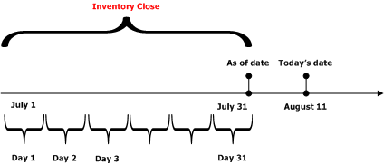
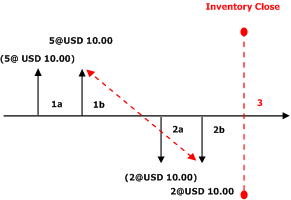
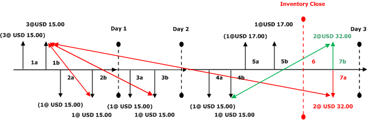
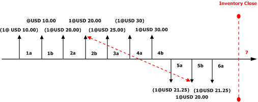

Gewichteter Durchschnitt (Datum)
Important
Dynamics 365 for Finance and Operations hat sich zu speziell entwickelten Anwendungen entwickelt, mit denen Sie bestimmte Geschäftsfunktionen verwalten können. Weitere Informationen zu diesen Änderungen finden Sie im Dynamics 365-Lizenzierungshandbuch.
Datum des gewichteten Durchschnitts ist ein Lagermodell, das auf dem Prinzip des gewichteten Durchschnitts basiert. Für das Prinzip des gewichteten Durchschnitts werden Abgänge aus dem Lagerbestand zum Durchschnittswert der Artikel bewertet, die im Lager für jeden Tag während der Lagerabschlussperiode eingehen.
Beim Ausführen eines Lagerabschlusses mithilfe des Datums des gewichteten Durchschnitts werden alle täglichen Zugänge anhand eines virtuellen Abgangs ausgeglichen. Dieser virtuelle Abgang enthält die Gesamtmenge und Gesamtwert der Zugänge für den jeweiligen Tag. Der virtuelle Abgang hat auch einen entsprechenden virtuellen Zugang, gegenüber dem die Abgänge ausgeglichen werden. Daher erhalten alle Abgänge die gleichen Durchschnittskosten. Der virtuelle Abgang sowie der virtuelle Zugang können als virtueller Übertrag betrachtet werden. Dieser ist als Gewichteter Durchschnitt des Lagerabschlussübertrags bekannt.
Wenn sich an oder vor dem Datum nur ein Zugang ereignet hat, müssen Sie den Durchschnitt nicht bewerten. Alle Abgänge werden nämlich anhand dieses Zugangs ausgeglichen, der virtuelle Übertrag wird nicht erstellt. Gleiches gilt, wenn an diesem Datum nur Abgänge zu verzeichnen sind. In diesem Fall sind keine Zugänge als Grundlage für eine Durchschnittsbewertung vorhanden, und der virtuelle Übertrag wird nicht erstellt. Bei Verwendung des gewichteten Durchschnitts können Lagerbuchungen markiert werden, damit ein bestimmter Artikelzugang mit einem bestimmten Abgang ausgeglichen wird. In diesem Fall verwenden Sie die Regel für das Datum des gewichteten Durchschnitts nicht. Wenn Sie das Lagermodell für das Datum des gewichteten Durchschnitts verwenden, empfiehlt es sich, einen monatlichen Lagerabschluss durchzuführen.
Die folgende Formel wird verwendet, um den gewichteten Durchschnitts nach folgender Formel zu berechnen:
Gewichteter Durchschnitt = ([Q1 × P1] + [Q2 × P2] + [Q n × P n]) ÷ (Q1 + Q2 + Q n)
Während des Lagerabschlusses wird die Berechnung innerhalb der Abschlussperiode täglich ausgeführt (siehe folgende Grafik).

Lagerbuchungen für Lagerabgänge – einschließlich Aufträge, Lagererfassungen und Produktionsaufträge – werden zu einem vorkalkulierten Einstandspreis zum Buchungsdatum ausgeführt. Dieser vorkalkulierte Einstandspreis wird auch als laufender Durchschnittseinstandspreis bezeichnet. Zum Zeitpunkt des Lagerabschlusses werden die Lagerbuchungen vom System für die vorangegangenen Perioden und Tage sowie für den aktuellen Tag analysiert. Mithilfe dieser Analyse wird ermittelt, welches der folgenden Abschlussprinzipien verwendet werden soll:
- Direkter Ausgleich
- Zusammengefasster Ausgleich
Bei einem Ausgleich handelt es sich um Lagerabschlussbuchungen zur Anpassung der Abgänge an den korrekten gewichteten Durchschnitt des Abschlussdatums.
Hinweis: Weitere Informationen zum Ausgleichen finden Sie im Artikel zum Lagerabschluss. In den folgenden Beispielen werden die Auswirkungen der Verwendung des gewichteten Durchschnitts anhand von fünf Konfigurationen veranschaulicht:
- Direkter Ausgleich für das Datum des gewichteten Durchschnitts, wenn die Option Physischen Wert einbeziehen nicht verwendet wird
- Zusammengefasster Ausgleich für das Datum des gewichteten Durchschnitts, wenn die Option Physischen Wert einbeziehen nicht verwendet wird
- Direkter Ausgleich für das Datum des gewichteten Durchschnitts, wenn die Option Physischen Wert einbeziehen verwendet wird
- Zusammengefasster Ausgleich für das Datum des gewichteten Durchschnitts, wenn die Option Physischen Wert einbeziehen verwendet wird
- Datum des gewichteten Durchschnitts, wenn Markierung verwendet wird
Direkter Ausgleich für das Datum des gewichteten Durchschnitts, wenn die Option Physischen Wert einbeziehen nicht verwendet wird
Die aktuelle Version nutzt das gleiche Prinzip des direkten Ausgleichs, das in früheren Versionen für den gewichteten Durchschnitt verwendet wurde. Das System führt den Ausgleich direkt zwischen Zugängen und Abgängen aus. Das System nutzt das Prinzip des direkten Ausgleichs in bestimmten Situationen:
- In der Periode wurden ein Zugang und mindestens ein Abgang gebucht.
- In der Periode wurden ausschließlich Abgänge gebucht, und der Lagerbestand enthält verfügbare Artikel aus einem früheren Abschluss.
Im folgenden Szenario wurden ein wertmäßig aktualisierter Zugang sowie ein wertmäßig aktualisierter Abgang gebucht. Beim Lagerabschluss wird der Zugang durch das System direkt mit dem Abgang ausgeglichen, und für den Abgang ist keine Regulierung des Einstandspreises erforderlich.
Die folgende Abbildung zeigt diese Buchungen an:
- 1a. Der physische Lagerzugang wird für die Menge "5" zu jeweils EUR 10,00 (Kosten) aktualisiert.
- 1b. Der wertmäßige Lagerzugangs wird für die Menge "5" zu jeweils EUR 10,00 (Kosten) aktualisiert.
- 2a. Der physische Lagerabgang wird für die Menge "2" zu jeweils EUR 10,00 (Kosten) aktualisiert.
- 2b. Der wertmäßige Lagerabgang wird für die Menge "2" zu jeweils EUR 10,00 (Kosten) aktualisiert.
-
- Der Lagerabschluss erfolgt unter Verwendung der Methode für den direkten Ausgleich, um den wertmäßigen Lagerzugang mit dem wertmäßigen Lagerabgang auszugleichen.

Schlüssel der Abbildung:
- Lagerbuchungen sind durch vertikale Pfeile dargestellt.
- Zugänge zum Lager sind als vertikale Pfeile über der Zeitachse dargestellt.
- Abgänge aus dem Lager sind als vertikale Pfeile unter der Zeitachse dargestellt.
- Über oder unter den einzelnen vertikalen Pfeilen ist im Format Menge@Einheitenpreis der Wert der Lagerbuchung angegeben.
- Wenn ein Lagerbuchungswert in Klammern gesetzt ist, wird die Lagerbuchung physisch in das Lager gebucht.
- Wenn ein Lagerbuchungswert nicht in Klammern gesetzt ist, wird die Lagerbuchung wertmäßig in das Lager gebucht.
- Jede neue Zugangs- oder Abgangsbuchung wird mit einer neuen Beschriftung versehen.
- Jeder vertikale Pfeil ist mit einer Sequenzkennung (beispielsweise 1a) versehen. Mit dieser Kennung wird die Sequenz der Lagerbuchungen auf der Zeitachse angegeben.
- Lagerabschlüsse sind durch eine vertikale rote gestrichelte Linie und die Beschriftung Lagerabschluss gekennzeichnet.
- Ein durch einen Lagerabschluss vorgenommener Ausgleich ist durch gestrichelte rote Pfeile dargestellt, die diagonal von einem Zugang zu einem Abgang verlaufen.
Zusammengefasster Ausgleich für das Datum des gewichteten Durchschnitts, wenn die Option "Physischen Wert einbeziehen" nicht verwendet wird
Der gewichtete Durchschnitt basiert auf dem Prinzip, dass alle Zugänge innerhalb einer Abschlussperiode in einer neuen Umlagerungsbuchung zusammengefasst werden. Diese Transaktion ist als Lagerabschluss mit gewichtetem Durchschnitt bekannt. Alle Zugänge des Tages werden mit dem Abgang der neu erstellten Umlagerungsbuchung ausgeglichen. Alle Abgänge des Tages werden mit dem Zugang der neuen Umlagerungsbuchung ausgeglichen. Ist der verfügbare Bestand nach dem Lagerabschluss positiv, werden der verfügbare Bestand sowie der Wert des Lagers im Zugang der neuen Umlagerungsbuchung zusammengefasst. Ist der verfügbare Bestand nach dem Lagerabschluss negativ, handelt es sich bei dem verfügbaren Bestand und dem Wert des Lagers um die Summe der einzelnen Abgänge, die noch nicht vollständig ausgeglichen wurden.
Im folgenden Szenario wurden im Laufe der Periode mehrere wertmäßig aktualisierte Zu- und Abgänge gebucht. Beim Lagerabschluss wird jeder Tag vom System bewertet, um die Behandlung der einzelnen Tage beim Abschluss zu ermitteln.
Die folgende Abbildung zeigt diese Buchungen an:
Tag 1:
- 1a. Der physische Lagerzugang wird für die Menge "3" zu jeweils EUR 15,00 aktualisiert.
- 1b. Der wertmäßige Lagerzugang wird für die Menge "3" zu jeweils EUR 15,00 aktualisiert.
- 2a. Physischer Lagerabgang für die Menge "1" zu laufenden Durchschnittskosten von EUR 15,00.
- 2b. Wertmäßiger Lagerabgang für die Menge "1" zu laufenden Durchschnittskosten von EUR 15,00.
Für Tag 1 wird der direkte Ausgleich verwendet.
Tag 2:
- 3a. Physischer Lagerabgang für die Menge "1" zu laufenden Durchschnittskosten von EUR 15,00
- 3b. Wertmäßiger Lagerabgang für die Menge "1" zu laufenden Durchschnittskosten von EUR 15,00
Für Tag 2 wird der direkte Ausgleich verwendet.
Tag 3:
- 4a. Physischer Lagerabgang für die Menge "1" zu laufenden Durchschnittskosten von EUR 15,00
- 4b. Wertmäßiger Lagerabgang für die Menge "1" zu laufenden Durchschnittskosten von EUR 15,00
- 5a. Physischer Lagerzugang für die Menge "1" zu jeweils EUR 17,00
- 5b. Wertmäßiger Lagerzugang für die Menge "1" zu jeweils EUR 17,00
Lagerabschluss wird vorgenommen. Da mehrere Zugänge vorhanden sind, die sich über mehrere Tage verteilen, muss der direkte Ausgleich verwendet werden.
- 7a. Für die Menge "2" wird ein wertmäßiger Abgang vom Typ "Lagerabschlussbuchung mit gewichtetem Durchschnitt" mit einem Wert von EUR 32,00 erstellt. Dadurch werden die Ausgleiche aller bislang erfolgten wertmäßigen Lagerzugänge zusammengefasst, die noch nicht abgeschlossen sind.
- 7b. Ein wertmäßiger Zugang vom Typ "Lagerabschlussbuchung mit gewichtetem Durchschnitt" wird zum Ausgleich von 7a erstellt.
Das System generiert und bucht die zusammengefasste Umlagerungsbuchung. Darüber hinaus gleicht das System alle Zugänge des Tages sowie den verfügbaren Bestand vorangegangener Tage gegenüber der zusammengefassten Umlagerungsabgangsbuchung aus. Alle Abgänge des Tages werden mit der zusammengefassten Umlagerungszugangsbuchung ausgeglichen. Als gewichteter Durchschnittseinstandspreis werden EUR 16,00 berechnet. Für den Abgang erfolgt eine Anpassung an den gewichteten Durchschnittseinstandspreis in Höhe von EUR 1,00. Der neue laufende Durchschnittseinstandspreis beträgt EUR 16,00.
Die folgende Abbildung zeigt eine Reihe von Transaktionen und die Auswirkungen der Verwendung des Lagermodells mit gewichtetem Durchschnitt und des Prinzips des zusammengefassten Ausgleichs, aber ohne die Option Physischen Wert einbeziehen zu verwenden.

Schlüssel der Abbildung:
- Lagerbuchungen sind durch vertikale Pfeile dargestellt.
- Zugänge zum Lager sind als vertikale Pfeile über der Zeitachse dargestellt.
- Abgänge aus dem Lager sind als vertikale Pfeile unter der Zeitachse dargestellt.
- Über oder unter den einzelnen vertikalen Pfeilen ist im Format Menge@Einheitenpreis der Wert der Lagerbuchung angegeben.
- Wenn ein Lagerbuchungswert in Klammern gesetzt ist, wird die Lagerbuchung physisch in das Lager gebucht.
- Wenn ein Lagerbuchungswert nicht in Klammern gesetzt ist, wird die Lagerbuchung wertmäßig in das Lager gebucht.
- Jede neue Zugangs- oder Abgangsbuchung wird mit einer neuen Beschriftung versehen.
- Jeder vertikale Pfeil ist mit einer Sequenzkennung (beispielsweise 1a) versehen. Mit dieser Kennung wird die Sequenz der Lagerbuchungen auf der Zeitachse angegeben.
- Lagerabschlüsse sind durch eine vertikale rote gestrichelte Linie und die Beschriftung Lagerabschluss gekennzeichnet.
- Ein durch einen Lagerabschluss vorgenommener Ausgleich ist durch gestrichelte rote Pfeile dargestellt, die diagonal von einem Zugang zu einem Abgang verlaufen.
- Durchgezogene, rote diagonale Pfeile zeigen die Zugangsbuchungen an, die mit der vom System erstellten Abgangsbuchung ausgeglichen werden.
- Der durchgezogene, grüne diagonale Pfeil steht für die vom System generierte Zugangsbuchung, mit der die ursprünglich gebuchte Abgangsbuchung ausgeglichen wird.
Direkter Ausgleich für das Datum des gewichteten Durchschnitts, wenn die Option Physischen Wert einbeziehen verwendet wird
Die aktuelle Version nutzt das gleiche Prinzip des direkten Ausgleichs, das in früheren Versionen für den gewichteten Durchschnitt verwendet wurde. Das System führt den Ausgleich direkt zwischen Zugängen und Abgängen aus. Das System nutzt das Prinzip des direkten Ausgleichs in bestimmten Situationen:
- In der Periode wurden ein Zugang und mindestens ein Abgang gebucht.
- In der Periode wurden ausschließlich Abgänge gebucht, und das Lager enthält verfügbaren Bestand aus einem früheren Abschluss.
Wenn Sie das Kontrollkästchen Physischen Wert einbeziehen für einen Artikel auf der Seite Artikelmodellgruppe aktivieren, verwendet das System aktualisierte Zugänge, wenn es den vorkalkulierten Einstandspreis berechnet, oder den laufenden Durchschnitt. Abgänge werden während der Periode auf Basis dieses vorkalkulierten Einstandspreises gebucht. Beim Lagerabschluss werden nur wertmäßig aktualisierte Zugänge in der Berechnung des gewichteten Durchschnitts berücksichtigt.
Zusammengefasster Ausgleich für das Datum des gewichteten Durchschnitts, wenn die Option Physischen Wert einbeziehen verwendet wird
Wenn Sie das Kontrollkästchen Physischen Wert einbeziehen für einen Artikel auf der Seite Artikelmodellgruppe aktivieren, verwendet das System aktualisierte Zugänge, wenn es den vorkalkulierten Einstandspreis berechnet, oder den laufenden Durchschnitt. Abgänge werden während der Periode auf Basis dieses vorkalkulierten Einstandspreises gebucht. Beim Lagerabschluss werden nur wertmäßig aktualisierte Zugänge in der Berechnung des gewichteten Durchschnitts berücksichtigt. Der Ausgleich mit gewichtetem Durchschnitt basiert auf dem Prinzip, dass die Zugänge innerhalb einer Abschlussperiode in einer neuen Umlagerungsbuchung, die als Gewichteter Durchschnitt des Lagerabschlusses bekannt ist, zusammengefasst werden. Alle Zugänge des Tages werden mit dem Abgang der neu erstellten Umlagerungsbuchung ausgeglichen. Alle Abgänge des Tages werden mit dem Zugang der neuen Umlagerungsbuchung ausgeglichen. Ist der verfügbare Bestand nach dem Lagerabschluss positiv, werden dieser verfügbare Bestand sowie der Wert des Lagerbestands im Zugang der neuen Umlagerungsbuchung zusammengefasst. Ist der verfügbare Bestand nach dem Lagerabschluss negativ, handelt es sich bei dem verfügbaren Bestand und dem Wert des Lagers um die Summe der einzelnen Abgänge, die noch nicht vollständig ausgeglichen wurden.
Datum des gewichteten Durchschnitts, wenn Markierung verwendet wird
Der Begriff "Markierung" bezeichnet ein Verfahren zum Verknüpfen einer Abgangsbuchung mit einer Zugangsbuchung. Eine Markierung kann entweder vor oder nach Ausführung der Buchung erfolgen. Durch die Verwendung einer Markierung lassen sich bei der Ausführung der Buchung oder des Lagerabschlusses die exakten Kosten des Lagers ermitteln.
Beispiel: In der Kundendienstabteilung wurde der Eilauftrag eines wichtigen Debitors angenommen. Da es sich hierbei um einen Eilauftrag handelt, müssen Sie für diesen Artikel einen höheren Preis bezahlen, um den Wunsch des Debitors erfüllen zu können. Deshalb müssen Sie sichergehen, dass bei der Auftragsrechnung die Kosten für diesen Lagerartikel in der Gewinnspanne bzw. im Wareneinsatz (COGS) berücksichtigt werden. Bei der Buchung der Bestellung erhält das Lager einen Zugang in Höhe von EUR 120,00 (Kosten). Das Auftragsdokument wird vor der Buchung des Lieferscheins oder der Rechnung für die Bestellung markiert. Anstelle der aktuellen laufenden Durchschnittskosten für den Artikel beträgt der Wareneinsatz (COGS) dann EUR 120,00. Wird der Lieferschein oder die Rechnung des Auftrags gebucht, bevor die Markierung vorgenommen wird, erfolgt die Buchung des Wareneinsatzes zum laufenden Durchschnittseinstandspreis. Die Markierung der beiden Buchungen kann noch bis zur Ausführung des Lagerabschlusses nachgeholt werden. Wenn eine Zugangsbuchung für eine Abgangsbuchung markiert wird, wird die in der Artikelmodellgruppe des Artikels definierte Bewertungsmethode ignoriert. Stattdessen gleicht das System diese Transaktionen miteinander aus.
Sie können vor der Ausführung der Buchung eine Abgangsbuchung für einen Zugang markieren. Dies kann von einer Auftragsposition auf der Seite Auftragsdetails aus erfolgen. Sie können die offenen Zugangsbuchungen auf der Seite Markierung anzeigen. Sie können nach der Buchung der Transaktion eine Abgangsbuchung für einen Zugang markieren. Sie können eine Abgangsbuchung für eine offene Zugangsbuchung für einen gelagerten Artikel aus einer gebuchten Lagerregulierungserfassung abgleichen oder markieren. Die folgende Abbildung zeigt diese Buchungen an:
- 1a. Physischer Lagerzugang für die Menge "1" zu einem Einstandspreis von jeweils EUR 10,00.
- 1b. Wertmäßiger Lagerzugang für die Menge "1" zu einem Einstandspreis von jeweils EUR 10,00 (Kosten).
- 2a. Physischer Lagerzugang für die Menge "1" zu einem Einstandspreis von jeweils EUR 20,00.
- 2b. Wertmäßiger Lagerzugang für die Menge "1" zu einem Einstandspreis von jeweils EUR 20,00 (Kosten).
- 3a. Physischer Lagerzugang für die Menge "1" zu einem Einstandspreis von jeweils EUR 25,00.
- 4a. Physischer Lagerzugang für die Menge "1" zu einem Einstandspreis von jeweils EUR 30,00.
- 4b. Wertmäßiger Lagerzugang für die Menge "1" zu einem Einstandspreis von jeweils EUR 30,00 (Kosten).
- 5a. Physischer Lagerabgang für die Menge "1" zu einem Einstandspreis von EUR 21,25 (laufender Durchschnitt wertmäßig und physisch aktualisierter Buchungen).
- 5b. Wertmäßiger Lagerabgang für die Menge "1" wird für den Lagerzugang aus 2b markiert, bevor die Buchung ausgeführt wird. Diese Buchung erfolgt zu einem Einstandspreis von EUR 20,00.
- 6a. Physischer Lagerabgang für die Menge "1" zu einem Einstandspreis von EUR 21,25.
-
- Lagerabschluss wird vorgenommen. Da die wertmäßig aktualisierte Transaktion für einen vorhandenen Zugang markiert ist, werden diese Transaktionen gegenseitig ausgeglichen, und es wird keine Regulierung vorgenommen.
Im neuen laufenden Durchschnittseinstandspreis ist der Durchschnitt der wertmäßig und physisch aktualisierten Buchungen in Höhe von EUR 27,50 berücksichtigt. Die folgende Abbildung zeigt eine Reihe von Transaktionen und die Auswirkungen der Verwendung des Lagermodells für das Datum des gewichteten Durchschnitts sowie der Verwendung der Markierung.

Schlüssel der Abbildung:
- Lagerbuchungen sind durch vertikale Pfeile dargestellt.
- Zugänge zum Lager sind als vertikale Pfeile über der Zeitachse dargestellt.
- Abgänge aus dem Lager sind als vertikale Pfeile unter der Zeitachse dargestellt.
- Über oder unter den einzelnen vertikalen Pfeilen ist im Format Menge@Einheitenpreis der Wert der Lagerbuchung angegeben.
- Wenn ein Lagerbuchungswert in Klammern gesetzt ist, wird die Lagerbuchung physisch in das Lager gebucht.
- Wenn ein Lagerbuchungswert nicht in Klammern gesetzt ist, wird die Lagerbuchung wertmäßig in das Lager gebucht.
- Jede neue Zugangs- oder Abgangsbuchung wird mit einer neuen Beschriftung versehen.
- Jeder vertikale Pfeil ist mit einer Sequenzkennung (beispielsweise 1a) versehen. Mit dieser Kennung wird die Sequenz der Lagerbuchungen auf der Zeitachse angegeben.
- Lagerabschlüsse sind durch eine vertikale rote gestrichelte Linie und die Beschriftung Lagerabschluss gekennzeichnet.
- Ein durch einen Lagerabschluss vorgenommener Ausgleich ist durch gestrichelte rote Pfeile dargestellt, die diagonal von einem Zugang zu einem Abgang verlaufen.